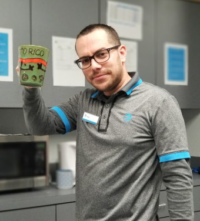

 Self-motivated with 14 years of experience in multiple business areas such as finance, customer service, and sales. I’ve worked for outstanding companies such as Hilton Hotels, Experian and At&T Mobility. Strong sales professional with a Bachelor of Business Administration (BBA) focused in Entrepreneurship/Entrepreneurial Studies from Inter-American University of Puerto Rico-San Germán Campus. Currently enrolled in SMU's Full Stack Flex Bootcamp program.
Through passionate and hard labor I have been promoted and nominated for various awards including Employee of the Year and Salesman of the Month. Meet and exceed goals with a steady 85% to 100% rate of Willing To Recommend on customer surveys in my current position.
Born in "The Enchanted Island" Puerto Rico at the age of 2 my family moved to Cleveland Ohio where I learned to speak English. By the age of 10, we moved back to the island before relocating to Texas I spent over 20 years in PR graduating with a bachelor degree in Business and gaining experience in Hospitality. Currently living in the Dallas Metroplex with my family that includes a 2-year-old and a 6-month-old. I've decided to challenge myself to complete this Web Developer Bootcamp with no previous knowledge in coding but with the desire to aspire to a prestigious job as a Web Developer.